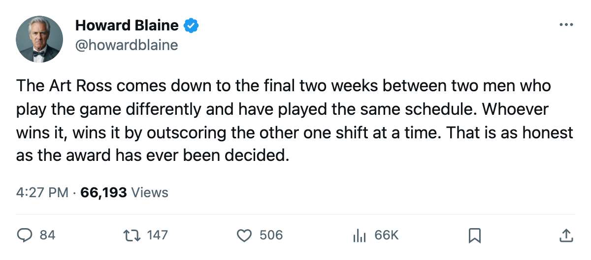
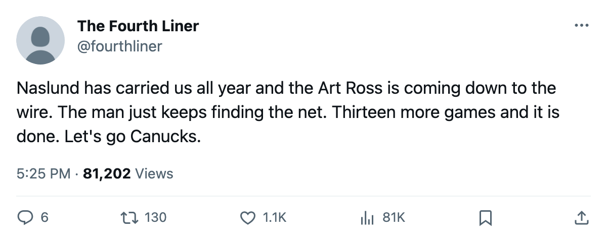

Scoring Race: Lecavalier matches Naslund's pace in 10 fewer games, and a 35-year-old center leads the league in goals
The Art Ross is 1 point wide with 13 games left, the Richard belongs to a man nobody penciled in, and the pace chart says a 24-year-old center has been as good as either
 Howard BlaineSenior writer, The Blaine Rankings · The Hockey Gazette
Howard BlaineSenior writer, The Blaine Rankings · The Hockey Gazette
 Markus Naslund89 Markus Naslund has 123 points.
Markus Naslund89 Markus Naslund has 123 points.  Jaromir Jagr89 Jaromir Jagr has 122. They have played the same number of games, 69, and have the same number remaining, 13. The Art Ross Trophy goes to the man who finishes with the most points, and the gap between 1st and 2nd is 1 point with 13 nights of hockey left to close or widen it.
Jaromir Jagr89 Jaromir Jagr has 122. They have played the same number of games, 69, and have the same number remaining, 13. The Art Ross Trophy goes to the man who finishes with the most points, and the gap between 1st and 2nd is 1 point with 13 nights of hockey left to close or widen it.
Naslund builds his case on goals, Jagr on setup. Naslund has 64 goals and 59 assists. Jagr has 54 goals and 68 assists, the most of any player in the league. Naslund plays 20.0 minutes a night for  Vancouver Canucks, 2nd in the Western Conference at 90 points. Jagr plays 22.4 for
Vancouver Canucks, 2nd in the Western Conference at 90 points. Jagr plays 22.4 for  Washington Capitals, 4th in the Eastern Conference at 85 points. The Bureau's Book grades Naslund 85 and Jagr 89.
Washington Capitals, 4th in the Eastern Conference at 85 points. The Bureau's Book grades Naslund 85 and Jagr 89.
| Player | Club | GP | G | A | Pts | Pace | MPG | Grade |
|---|---|---|---|---|---|---|---|---|
| [[player:701\|Markus Naslund]] | Vancouver Canucks | 69 | 64 | 59 | 123 | 146 | 20.0 | 85 |
| [[player:434\|Jaromir Jagr]] | Washington Capitals | 69 | 54 | 68 | 122 | 145 | 22.4 | 89 |
| [[player:509\|Ilya Kovalchuk]] |  Atlanta Thrashers Atlanta Thrashers | 66 | 53 | 60 | 113 | 140 | 20.3 | 92 |
| [[player:68\|Todd Bertuzzi]] | Vancouver Canucks | 69 | 51 | 62 | 113 | 134 | 21.2 | 89 |
| [[player:346\|Bill Guerin]] |  Dallas Stars Dallas Stars | 61 | 53 | 55 | 108 | 145 | 20.2 | 89 |
| [[player:302\|Peter Forsberg]] |  Colorado Avalanche Colorado Avalanche | 67 | 51 | 57 | 108 | 132 | 21.0 | 95 |
| [[player:212\|Eric Daze]] |  Chicago Blackhawks Chicago Blackhawks | 68 | 50 | 58 | 108 | 130 | 20.8 | 87 |
| [[player:377\|Dany Heatley]] | Atlanta Thrashers | 63 | 52 | 54 | 106 | 138 | 21.5 | 90 |
| [[player:560\|Vincent Lecavalier]] |  Tampa Bay Lightning Tampa Bay Lightning | 59 | 47 | 58 | 105 | 146 | 21.9 | 90 |
Pace puts a 24-year-old center where the totals will not
 Vincent Lecavalier89 Vincent Lecavalier has 105 points in 59 games. His pace, 146 points per 82 games, is tied with Naslund's for the best mark in the league. He is 24, he plays 21.9 minutes a night for Tampa Bay Lightning, and Tampa Bay has 14 games left. Bill Guerin player 346 is the other outlier: 108 points in 61 games, a pace of 145 that matches Jagr. He is 34, and Dallas Stars has 14 games left.
Vincent Lecavalier89 Vincent Lecavalier has 105 points in 59 games. His pace, 146 points per 82 games, is tied with Naslund's for the best mark in the league. He is 24, he plays 21.9 minutes a night for Tampa Bay Lightning, and Tampa Bay has 14 games left. Bill Guerin player 346 is the other outlier: 108 points in 61 games, a pace of 145 that matches Jagr. He is 34, and Dallas Stars has 14 games left.
The Art Ross does not use pace. Lecavalier has 59 games on the board and Naslund has 69. That is a 10-game deficit in a totals race, and no per-game rate closes a games-played gap unless the trailing man outpaces the leading man at a rate the leading man has not yet managed himself. No player in the league has scored above a 146 pace this season. Lecavalier would need to sustain a pace above 146 over his remaining 14 games just to have a chance, which is a different claim from matching Naslund's pace.

The pace chart becomes the argument when standings alone do not settle a Hart vote, and on pace Lecavalier has been as productive as the league's scoring leader on 10 fewer games.
The 1-point Art Ross gap between Naslund and Jagr is the kind of margin that does not hold. Both men have 13 games left. Jagr plays 22.4 minutes a night, Naslund 20.0, which means more chances per game but more miles on a 33-year-old's legs in the back half of a season. The Bureau's Book has Jagr at 89, 4 points above Naslund's 85. On the other hand, Naslund's Vancouver Canucks club has 13 games left to a Washington Capitals club that is 5 points further from the 1st seed in its own conference, and the schedule has 4 more games in it than Jagr's does. The sheet carries both as logged facts.
The Richard belongs to a 35-year-old center with 65 goals
 Sergei Fedorov90 Sergei Fedorov has 65 goals. He is 35. He has 30 assists for 95 points, 17th in scoring, a pace of 113, and the Book grades him 90. He won the Lester B. Pearson Award last season as the league's most outstanding player as voted by his peers, and this season he is the highest goal scorer in hockey while ranking 17th in total points, a construction no other man in the league's top 20 matches.
Sergei Fedorov90 Sergei Fedorov has 65 goals. He is 35. He has 30 assists for 95 points, 17th in scoring, a pace of 113, and the Book grades him 90. He won the Lester B. Pearson Award last season as the league's most outstanding player as voted by his peers, and this season he is the highest goal scorer in hockey while ranking 17th in total points, a construction no other man in the league's top 20 matches.
Naslund has 64 goals, 1 behind Fedorov.  Jarome Iginla92 Jarome Iginla has 61 in 61 games, the Richard Trophy on his shelf from last season when he scored 92 in 73, and he is 27.
Jarome Iginla92 Jarome Iginla has 61 in 61 games, the Richard Trophy on his shelf from last season when he scored 92 in 73, and he is 27.  Zigmund Palffy87 Zigmund Palffy has 60 for
Zigmund Palffy87 Zigmund Palffy has 60 for  Los Angeles Kings.
Los Angeles Kings.  Geoff Sanderson86 Geoff Sanderson has 58 for
Geoff Sanderson86 Geoff Sanderson has 58 for  Columbus Blue Jackets.
Columbus Blue Jackets.  Ilya Kovalchuk92 Ilya Kovalchuk has 53 for Atlanta Thrashers.
Ilya Kovalchuk92 Ilya Kovalchuk has 53 for Atlanta Thrashers.
Fedorov has scored 65 of  Mighty Ducks of Anaheim's 196 goals this season. The Ducks are 6th in the Western Conference at 82 points, 22 points above the 8th seed, and Fedorov's 65 goals against 30 assists is the most lopsided goal-to-assist split in the league's top 25. Iginla, who has 15 games left for
Mighty Ducks of Anaheim's 196 goals this season. The Ducks are 6th in the Western Conference at 82 points, 22 points above the 8th seed, and Fedorov's 65 goals against 30 assists is the most lopsided goal-to-assist split in the league's top 25. Iginla, who has 15 games left for  Calgary Flames at 61 goals in 61 games, is the man most likely to catch him. If both play every remaining game at their current rate, the Richard comes down to the last week of March.
Calgary Flames at 61 goals in 61 games, is the man most likely to catch him. If both play every remaining game at their current rate, the Richard comes down to the last week of March.
Where the Hart lands, and why the answer is not the scoring title
The Hart usually goes to the highest scorer on the best team. Naslund leads scoring;  Toronto Maple Leafs leads the league at 110 points, 20 ahead of 2nd-place
Toronto Maple Leafs leads the league at 110 points, 20 ahead of 2nd-place  New Jersey Devils, with
New Jersey Devils, with  Marian Gaborik99 Marian Gaborik at 83 points, Ed Belfour player 55 at 24 wins and a 1.98 goals-against average, and a goal differential of 162 that is 110 more than any other club's. The 110-point gap between the top club and the 2nd club in the same conference is the largest in the sheet, and it means the Toronto construction does not depend on any single man's point total.
Marian Gaborik99 Marian Gaborik at 83 points, Ed Belfour player 55 at 24 wins and a 1.98 goals-against average, and a goal differential of 162 that is 110 more than any other club's. The 110-point gap between the top club and the 2nd club in the same conference is the largest in the sheet, and it means the Toronto construction does not depend on any single man's point total.
Lecavalier has the best pace in the league and a 3rd-place club. Kovalchuk is 21 years old, has 113 points, and plays for an 8th-place club. Forsberg has 108 points and the best overall grade in the top 30 at 95, also on a 3rd-place club. None of those men leads the league in points. The Hart conversation in March is always premature. The shape of it is already visible, and it runs through four different men for four different reasons.
Naslund and Jagr have 13 games left. Lecavalier and Guerin have 14. The Art Ross goes to the man who scores the most points between tonight and April 6, and the sheet says that man is Naslund by 1, for now, with 13 games in which the man graded 4 points above him gets 22.4 minutes a night against Naslund's 20.0.

